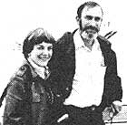

OTHER SPECIES: AESTHETICS, INTEREST, AND ETHICS
Paul Ehrlich(Bing Professor of Population Studies and Professor of Biological Sciences, Stanford University) and Anne Ehrlich (Senior Research Associate, Department of Biological Sciences, Stanford) are familiar names to ecologists and environmentalists everywhere. As well they should be. Because it was Paul and Anne who-through their writing and research-gave special meaning to the words "population" ; "resources" , and "environment" in the late 1960'x. (They also coined the term coevolution, and did a lot to make ecology the household word it is today.) But while most folks are aware ofthe Ehrlichs' popular writing in the areasof ecology and overpopulation (most of us for instancehave read Paul's book The Population Bomb) . . . far too few people have any idea of how deeply the Ehrlichs are involved in ecological research (research of the type that tends to be published only in technical journals and college textbooks). That's why it pleases us to be able to present-on a regular basis-the following semi-technical column by authors/ecologists/educators Anne and Paul Ehrlich.
The direct and indirect economic benefits that human beings receive from other species (discussed in MOTHER NOS. 57, 68, and 69) are potent reasons for deep concern about the ongoing extinction of the world's plants, animals, and microbes. But there are other, largely noneconomic, reasons for doing our best to maintain the planet's biological diversity . . . reasons which some people may think trivial, but which others feel are among the most important of all: that the species with which we share the earth are beautiful, they're fascinating, and they have a right to exist.
The beauty of such organisms as butterflies, birds, reef fishes, and flowering plants is widely recognized. But many less well-known fauna and flora are-when viewed objectively-attractive also. For example, some tiny wasps and flies, if seen under a microscope, appear to be fashioned out of solid gold. And the algae known as diatoms have glasslike shells that are as exquisite and varied as snowflakes.
Indeed, all organisms at least exhibit the beauty of design. Even the tiniest beetles-some of which are scarcely larger than a period on this page-have complete external skeletons, nervous and digestive systems, and complex sets of muscles. Such insects show a degree of sophisticated miniaturization as yet unapproached by human engineers.
AESTHETIC DIVERSIONS
In addition to their conventional beauty, living organisms have what might be called a "beauty of interest". Their diversity of form and behavior is a potential source of infinite fascination fn a world often hungry for diversion. This quality is attested to by the immense popularity of such hobbies as bird watching and the keeping of tropical fish.
The insects, however, are among the least appreciated of our aesthetic resources. But, as one becomes acquainted with them, they'll often stop looking like an amorphous mob of bugs and come to be seen as a highly differentiated group of the rivets holding Spaceship Earth to gether. Take beetles, for instance. There are probably over a million species of the hardshelled insects. In fact, when a lady asked the famous British biologist J.B.S. Haldane what one could conclude about the nature of the Creator by studying His or Her creations, Haldane is reputed to have replied that He or She must surely have had "an inordinate fondness for beetles".
It certainly is true that members of this particular order of insects display a great variety of shapes and sizes. The giant rhinoceros beetle of the tropics, for instancewhich is the heaviest of all insects-weighs more than the smallest mammals . . . and the males of the species use their grotesque horns in fierce Lilliputian battles over females. Last December, near Iguazu Falls in southwestern Brazil, we picked up some of these big insects to bring home to John Holdren's teenage son, who is a devout beetle collector. The "rhinos" were so strong that they easily walked through plastic bags and forced their way out of cardboard boxes!
Indeed, books could be written about beetle behavior. Bombardier beetles, for example, can shoot a hot, unpleasant spray from their tails at their enemies. Fireflies (a kind of beetle) use their flashing lights to arrange meetings for mating . . . and the females of some lightning bug species even flash the "code" of other species and then devour the hapless amorous males that come flying in! Other insects perform in equally unusual ways.
In short, insects display the same kind of beauty and intricacy that captivates gun collectors, airplane and train buffs, philatelists, science fiction and computer enthusiasts, bibliophiles, and so on. Therefore, even if insects didn't play crucial roles in our ecosystems, the loss of their diversity would make our world a much less interesting place.
KNOWLEDGE BREEDS COMPASSION
As humankind gets to know its fellow creatures, interest is often followed by compassion. Numerous books and television documentaries about whales-combined with the performances of killer whales in marine parks-have, in recent years, transformed people's attitudes toward these highly intelligent animals. Once the great mammals were simply considered to be a source of oil and meat. Today their welfare has become a matter of great concern for many human beings.
One turning point in human relationships with these gentle giants was the discovery that humpback whales sing long, complex, beautiful songs. These melodies may last for as long as 30 minutes and may be repeated verbatim indefinitely. The songs-clearly audible through the hulls of ships-were the basis of many seamen's legends . . . and we've been lucky enough to hear them ourselves, both underwater and in the cabin of a sailboat.
It's hard to imagine how someone who has watched humpbacks jumping clear of the water like gigantic salmon or "lobtailing" (lifting their flukes and, like beavers, slapping the surface of the water with them) could kill these animals for dog food! Most of the hundreds of thousands of tourists who've seen the whales cavort in the waters off Maui's beaches in Hawaii would agree with Herman Melville's early description of the humpback: "He is the most gamesome and lighthearted of all the whales, making more gay foam and white water generally than any other of them.
"HUMAN ARROGANCE"
The compassion that many of us feel for other life forms creates the basis of what some consider the most potent argument in favor of preserving other species. The contention is basically a religious one: that our fellow passengers on Spaceship Earth, who may be our only living companions in the entire universe, have a right to exist .
David Ehrenfeld, in his thought-provoking book The Arrogance of Humanism , called this the "Noah Principle". . . naming it after the best-known practi tioner of conservation in history. In Ehrenfeld's view, species and communities should be conserved "because they exist and because this existence is itself but the present expression of a continuing historical process of immense antiquity and majesty. Long-standing existence in Nature . . . carries with it the unimpeachable right to continued existence."
Many individuals-from Buddha on-have questioned whether human beings have the right to kill other animals at all, let alone push any species to extinction . . . which is to play God. To many such people, including Ehrenfeld, the elimination of a unique group of organisms must be the ultimate form of arrogance, and must be based upon a conviction that human beings are the only important form of life and that they alone should decide whether others should be permitted to live or not.
Of course, there's no scientific way to "prove" that nonhuman organisms (or, for that matter, humans themselves) have a right to exist. But we and others believe that along with the preeminence that Homo sapiens has achieved goes a very great moral responsibility-a stewardship, if you will-upon which we must not turn our backs. Perhaps especially because we have the power to destroy them, we must respect the rights of our co-inhabitants of Earth.
There has been a historical trend toward expanding the notion of "rights" to include creatures other than Homo sapiens. A century ago, for example, it was permissible to beat a horse to death if it was your "property". Today, horses are legally protected against such abuse. Indeed, the idea that other animals have intrinsic rights is now widespread. This change in attitude is seen in the general revulsion at such spectacles as the Canadian slaughter of baby seals and the killing of dolphins by Japanese fishing crews . . . and it's enshrined in our humane laws.
We think the trend should be further encouraged, however, so that "rights" can be extended even further . . . beyond domestic animals to plants and, perhaps, even to such inanimate components of ecosystems as rocks and landforms. Such a notion was proposed by the famous conservationist Aldo Leopold in 1948, when he called for the development of a "land ethic" in which the "land" (he used the term as shorthand for "natural ecosystems") would be used but not abused. He wrote, "A land ethic changes the role of Homo sapiens from conqueror of the land-community to plain member of it. It implies respect for his fellow members and also respect for the community as such."
The development of an ethic of respect would probably be the very best way to save humanity from the catastrophic effects of its assault on organic diversity. Of course, such an ethic would have to transcend immediate economic considerations. (In the long term it would have extremely positive economic effects.) As conservationist Rod Nash once most colorfully put it: "One does not consider the price [of defense] if someone threatens to rape one's daughter. With environmental ethics a reality, the same might be true of attempts to rape the land."
A TOUCH OF BRIGHTNESS AND LIGHT
However, the general acceptance of the notion that other species have rights will probably be long in gaining acceptance. For example, a few years back many millions of Americans got to know a mountain gorilla named Digit . . . when he appeared with primatologist Dian Fossey in a National Geographic Society television special. He had, in a very real sense, become a friend of Dian's, and the documentary showed him examining her pen and her notebook . . . gently returning each one . . . and then lying down and going to sleep by her side.
But on the last day of 1977, Digit was speared to death by some poachers in Rwanda's Parc des Volcans. Five mortal thrusts felled him as he remained behind to buy time, allowing more vulnerable members of his family group to flee. He was killed by people who wanted the head and hands of a "silverback" male to make into souvenirs for tourists.
Dian christened Digit's baby, conceived before his death, "Mwelu" (the name is Swahili for "a touch of brightness and light"). Many people hope that Mwelu will have a chance for a normal gorilla existence, but others ask, "What good are gorillas?" . . . and conclude that the large apes are really of no value at all. Such men and women believe that killing Digit was right, and that the best use of the remaining gorilla habitat in the park would be to convert it to grazing land.
The latter attitude is so widespread today that we sometimes wonder whether there's any real hope of a new ethic spreading fast enough to save the Mwelus of the planet . . . or Homo sapiens. As yet, far too few people realize that our fate is inextricably intertwined with that of the beings our species is so heedlessly pushing toward extinction. Human life is as dependent upon the continued existence of these other essential components of Earth's ecosystems as they are dependent upon us to spare them. Perhaps that reality, if nothing else, will at last give birth to compassion and respect for life in "practical" people.
For an expanded treatment of this subject, see Paul and Anne Ehrlich's Ex tinction: The Causes and Consequences of the Disappearance of (Random House, New York, 1981, $15.95) on which this column is based. In addition, David Ehrenfeld's The Arrogance of Humanism is now available in paperback(Oxford University Press, New York, 1981, $5.95). And for an interesting discussion of the "rights of rocks",consult C.D. Stone's Should Trees Have Standing? Toward Legal Rights for Natural Objects(Kaufmann, Los Altos, California, 1974, $3.75).
|
 |
|
|